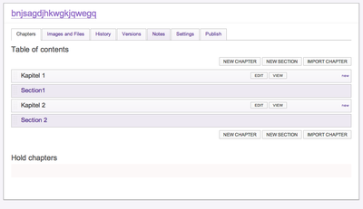
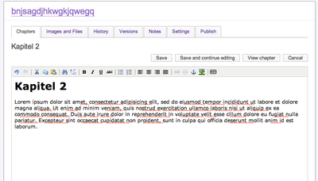
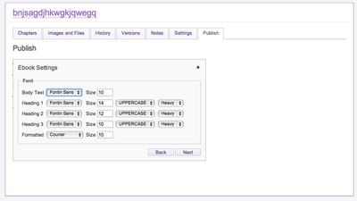

Booktype vs. Produce & Publish

Last week a new product Booktype appeared in public. Booktype is an open-source authoring solution for creating PDF files and EBooks through the web. Booktype is completely implemented in Python (it is uses Django). It follows the paradigm Single-Source Multi-Channel Publishing which basically means: one content-source for all kind of publications and output formats. As author of the Produce & Publish solution I became curious and did some testing.
The first visual difference to Produce & Publish is that the UI is completely task-oriented. The primary task is: I want to write a book.

Produce & Publish itself supports the same functionality but the approach is a bit more generic and basically offers only the standard Plone user interface to content authors. Produce & Publish provides infinite nesting of chapters, sections etc. while Booktype provides only chapters and sections.
Editing content in Booktype basically works the same way as in Plone. Booktype uses TinyMCE as primary content editor. The editor opens inline (similar to former Plone versions using KSS for inline editing). Honestly I love the inline editing in Booktype feature (as I loved it in Plone 3) - it gives me a better user experience.

In order to generate an Ebook or a PDF file Booktype provides some simple wizards where you can choose from some pre-defined options like fonts, font sizes etc.

The conversion request seems to end up in queue. After the conversion Booktype will present you an URL where you can download the generated output format.
So far, so good. Booktype is very easy to use. The perfect solutions for average editors since the user interface gives you only the options that you need to get your task (writing a book) done. Produce & Publish in comparison exposes many more advanced options to the average editor. So the complexity of Produce & Publish might be overwhelming for this editor type.
Comparison of features: the feature list of Produce & Publish is more complete compared to Booktype. Produce & Publish provides powerful support for features like cross-references, listings for indexes, tables and images, sophisticated handling of images and their resolution. Apart from that each content project in Produce & Publish can be configured with individual stylesheets, assets and templates. Its overall architecture appears more open and pluggable (perhaps as a result of using features of the Zope Component Architecture where needed).
Comparison of output results: at the time of writing I have no idea how content is converted to PDF or to EPUB. The open-source code base does not contain any references to external converters. I assume Booktype provides conversion as a hosted service. A tests reveal that the creator of the PDF files is "ghostscript" but there is no indication what is used for generating the input for "ghostscript". The overall PDF quality is average. Produce & Publish provides high-quality hyphenation support (similar to TeX or LaTeX) - nothing that I could detect in Booktype. Produce & Publish also support features like multi-column rendering of content in PDF, image floats etc.
Overall conclusion: Booktype is great tool for average content editors that need to write a book without having the need to deal with stylesheet or complex configurations. It provides a limited functionality and a great user interface for getting the job done. However Produce & Publish is the better solution (feature-wise and quality-wise).